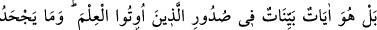
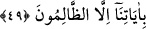

kalbine indirdi.” (eş-Şuarâ, 26/193-194)
Sonra Allah Teâlâ, bu rütbenin Hz. Peygamber (s.a.v.)’e tabi olanların sadırlarında da
olacağını işâret edip buyurdu ki:
49. Hayır, o (Kur’an), kendilerine ilim verilenlerin sînelerinde (yer eden) apaçık
âyetlerdir. Âyetlerimizi, ancak zâlimler bile bile inkâr eder.
“Hayır, o (Kur’an), kendilerine ilim verilenlerin sînelerinde (yer eden) apaçık
âyetlerdir. Onlar onu bir kitaptan almamışlardır ve tahrifine hiç kimsenin güç
getiremeyeceği şekilde onu hıfzederler.
Kâşîfî der ki: Sînelerine ilim verilmiş olanlar, yâni ehl-i kitaptan olan müminler. Veya
sahâbe-i kirâm onu öğrenirler/ezberlerler ve hiç kimse Kur’ân’ı tahrif edemez. Ancak
Kur’ân’ı ezbere okumak bu ümmet-i merhûmenin özelliğidir. Zira önceki kitapları
varaklardan okurlardı.
Yâni Kur’ân’ın onların sadırlarında mahfuz olması onun husûsiyetlerindendir. Çünkü
önceki ümmetler kitaplarını sadece bakarak okurlardı ve kapattıkları zaman
peygamberlerden başkası onu anlayamazdı. Kârûn’un, Tevrat’ı ezberden okuduğu
şeklindeki rivâyet sabit değildir.
Bu yüzdendir ki Hz. Musa (a.s.) Allah’a münâcâtta şöyle dedi: “Ya Rabbî! Ben
Tevrat’ta bir ümmet buluyorum ki onların incilleri kalblerindedir, yazılı olmasa da onu
açıktan ezbere okurlar.”
Onlar, olgunluklarının kuvvetinden ve kabîliyetlerinin üstünlüğünden dolayı
peygamberlerinin (s.a.), şerîatını hıfzederlerdi. Tevrat’ın ise resmi (satırlardaki yazısı)
bozulunca, şerîatı da bozulmuştur.
Bazı eserlerde şöyle vârid olmuştur: Yahudi ve hristiyanlar, Kur’ân’ın ezberlenmesine
hased ettikleri gibi hiç bir şeye hased etmemişlerdir.
Ebû Ümâme (r.a.) der ki: Allah Teâlâ, kalbinde Kur’ân bulunan kimseye ateşle azâb
etmez.
Rasûlullah (s.a.) buyurmuştur ki: “Kalbinde Kur’ân’dan bir şey bulunmayan kimse,
harab olmuş bir ev gibidir.”[191]
Hadîs-i şerîfte buyrulmuştur ki: “Kur’ân’la ahdinizi tazeleyin, devam ettirin.
Muhammed’in nefsi elinde olan Allah’a yemin ederim ki o, bağlı devenin bağından
boşanıp kaçtığı gibi kişinin kalbinden kaçıp gider.” [192]
“Teâhüd” ve “taahhüd” kelimeleri, muhâfaza etmek, hıfzı korumak ve dâimâ
yenilemek demektir. Hadiste kasdedilen Kur’an tilâvetine devam etmek ve dâimâ
tekrarlayıp okumaktır. Kur’ân’ı okuyanın uyması gereken sünnetlerden biri de